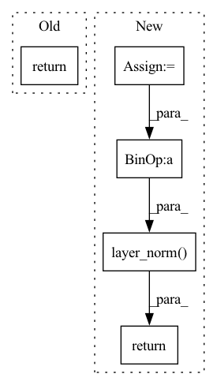

Pattern ID :25758
Before Change
)
// x.shape == (batch_size, target_seq_len, d_model)
return x
After Change
output = pos_enc_tgt
for i in range(self.num_layers):
normed_output = self.layer_norm(output, **kwargs)
output = output + self.dropout(
self.attention[i](normed_output, normed_output, normed_output, target_mask, **kwargs),
**kwargs,
)
normed_output = self.layer_norm(output, **kwargs)
output = output + self.dropout(
self.source_attention[i](normed_output, memory, memory, source_mask, **kwargs),
**kwargs,
)
normed_output = self.layer_norm(output, **kwargs)
output = output + self.dropout(self.position_feed_forward[i](normed_output, **kwargs), **kwargs)
// (batch_size, seq_len, d_model)
return self.layer_norm( output, **kwargs)
In pattern: SUPERPATTERN
Frequency: 3
Non-data size: 5
Instances Fragment ID: 78002790
Project Name: mindee/doctr
Commit Name: 9530f81d15395006b4844299236bdadba11c1dde
Time: 2022-07-01
Author: felixdittrich92@gmail.com
File Name: doctr/models/recognition/transformer/tensorflow.py
M Class Name: Decoder
N Class Name: Decoder
M Method Name: call(5)
N Method Name: call(5)
M Parent Class: NestedObject,layers.Layer
N Parent Class: tf.keras.layers.Layer
M File Name: doctr/models/recognition/transformer/tensorflow.py
N File Name: doctr/models/recognition/transformer/tensorflow.py
M Start Line: 251
M End Line: 265
N Start Line: 160
N End Line: 179
Before Change
)
// shape (batch_size, target_seq_len, d_model)
return x
After Change
output = output + self.dropout(
self.attention[i](normed_output, normed_output, normed_output, target_mask)
)
normed_output = self.layer_norm(output)
output = output + self.dropout(
self.source_attention[i](normed_output, memory, memory, source_mask)
)
normed_output = self.layer_norm( output)
output = output + self.dropout(self.position_feed_forward[i](normed_output))
return self.layer_norm(output)
Fragment ID: 78002919
Project Name: mindee/doctr
Commit Name: fddceba7bee5098b4219b7ba6a0bdf4f4a98adfe
Time: 2022-06-09
Author: felixdittrich92@gmail.com
File Name: doctr/models/recognition/transformer/pytorch.py
M Class Name: Decoder
N Class Name: Decoder
M Method Name: forward(5)
N Method Name: forward(5)
M Parent Class: nn.Module
N Parent Class: nn.Module
M File Name: doctr/models/recognition/transformer/pytorch.py
N File Name: doctr/models/recognition/transformer/pytorch.py
M Start Line: 74
M End Line: 91
N Start Line: 147
N End Line: 167
Before Change
// compute output
att = (att_score @ v).view(batch_size, seg_len, -1)
return self.layer_norm(self.mlp(att) + x)
def circulant_shift(self, x, shift):
After Change
// compute output
att = (att_score @ v).view(batch_size, seg_len, -1)
out = self.dropout(self.mlp(att))
return self.layer_norm( out + x)
def circulant_shift(self, x, shift):
Shifts top row of `x` by `shift`, second row by `shift-1`, etc. This is Fragment ID: 78002921
Project Name: augustwester/transformer-xl
Commit Name: cc7f32da8e71438812e757fbe2a131b14a5cfc2f
Time: 2022-11-28
Author: august.wester@gmail.com
File Name: attention.py
M Class Name: MultiHeadAttention
N Class Name: MultiHeadAttention
M Method Name: forward(4)
N Method Name: forward(4)
M Parent Class: nn.Module
N Parent Class: nn.Module
M File Name: attention.py
N File Name: attention.py
M Start Line: 28
M End Line: 51
N Start Line: 29
N End Line: 54